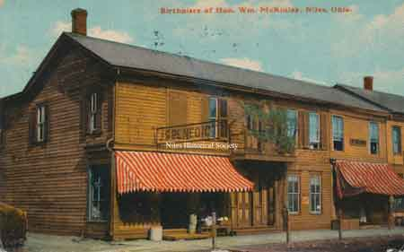
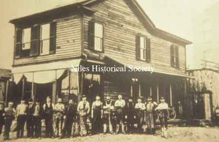
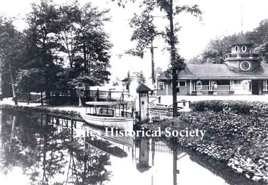
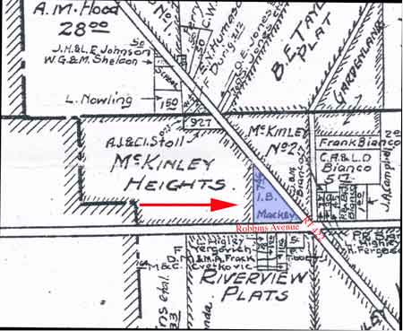
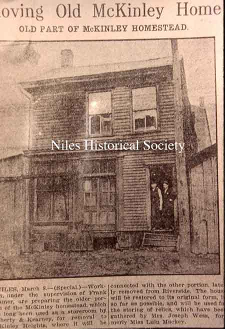
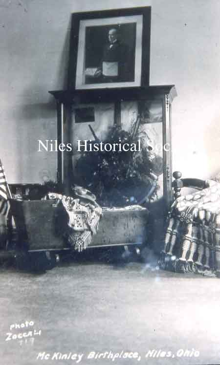

Story President William McKinleys Birthplace

1834 Platting of lots in Nilestown, later Niles, Ohio.
{kind=link}

J.S. Benedict General Store

City National Bank building, 1894

City National Bank

View of west side of South Main Street
{kind=link}

The half-house in the picture was the boyhood home of William McKinley; later it served as the Harris Company's first plant.
{kind=link}

Riverside Park, was a pleasure resort located at the intersection of Route 46 and Salt Springs Road

Wm. McKinley's birthplace half-house at Riverside Park, 1895


The museum house was burned after midnight April 3, 1937.
{kind=link}

The 1931 map on the right indicates the museum location in McKinley heights.

Restored McKinley Museum

Postcard of Museum of Wm. McKinley
{kind=link}

Moving McKinley Homestead March 8, 1909
{kind=link}

Collection of McKinley relics and souvenirs

During the late 1890's, after McKinley had been elected President, an effort was made to preserve his birthplace.
West side of South Main Street, 1894

Interior view of McKinley Federal Savings Bank, 1935 before renovations.

Renovated bank early 1950's

Bank with demolition for drive-thru, early 60's

Bank with demolition for drive-thru, early 60's

Bank with drive-thru completed in 1962.

Demolition of bank completed.